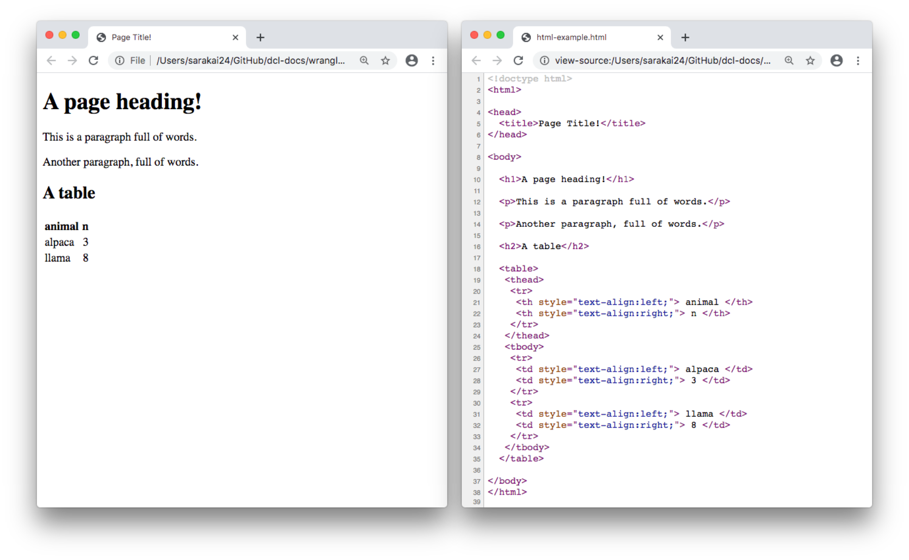
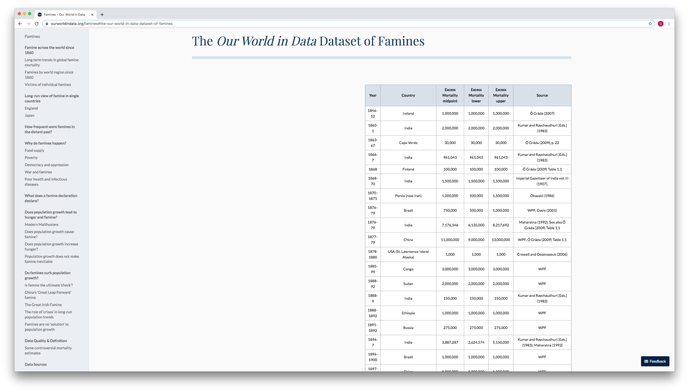
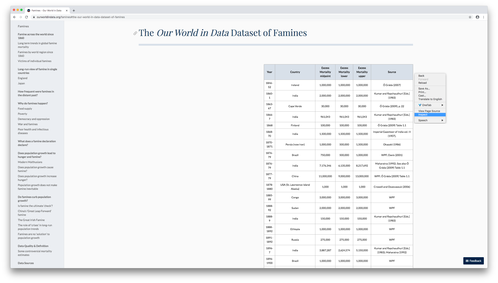
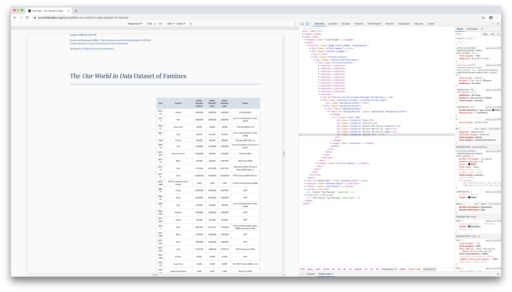
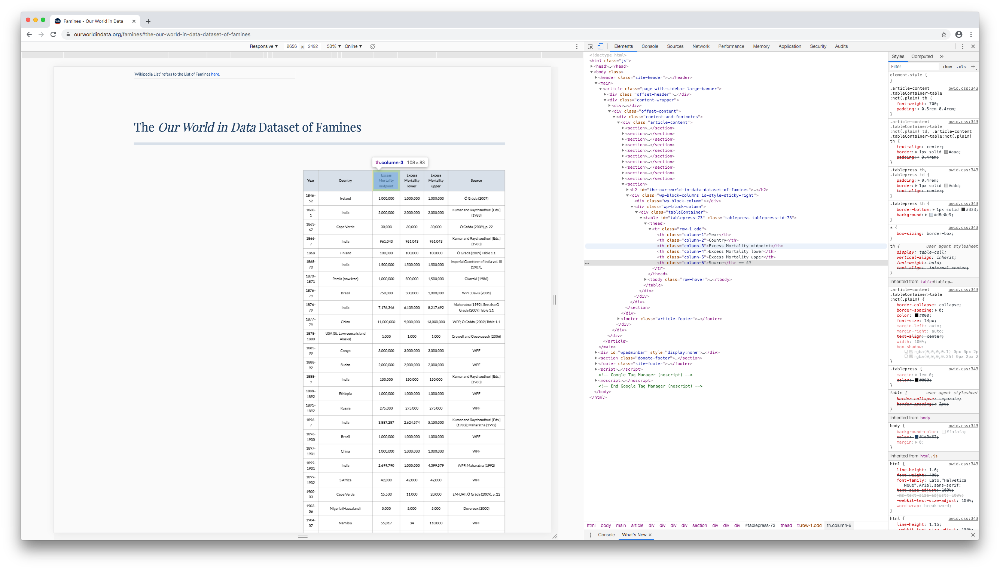
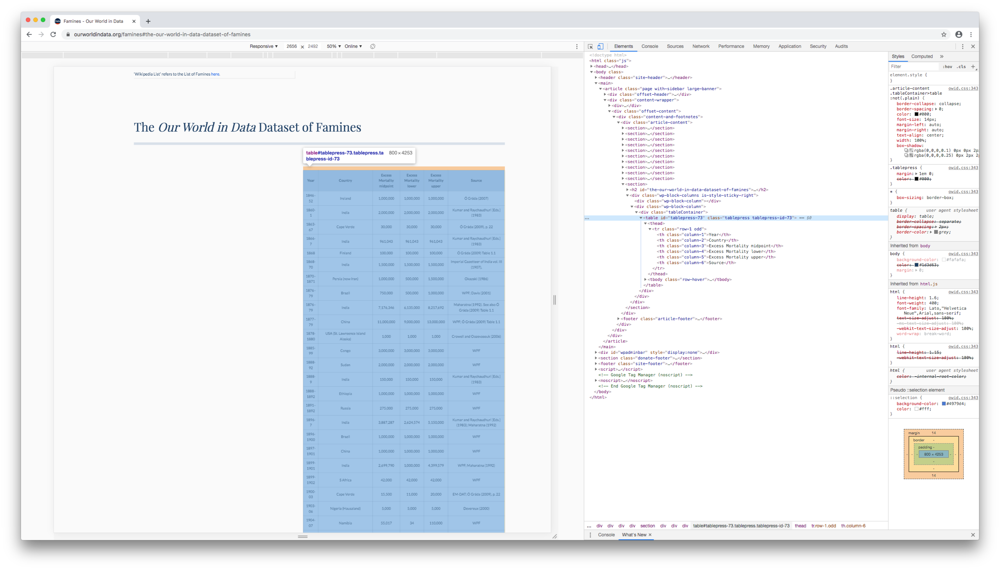
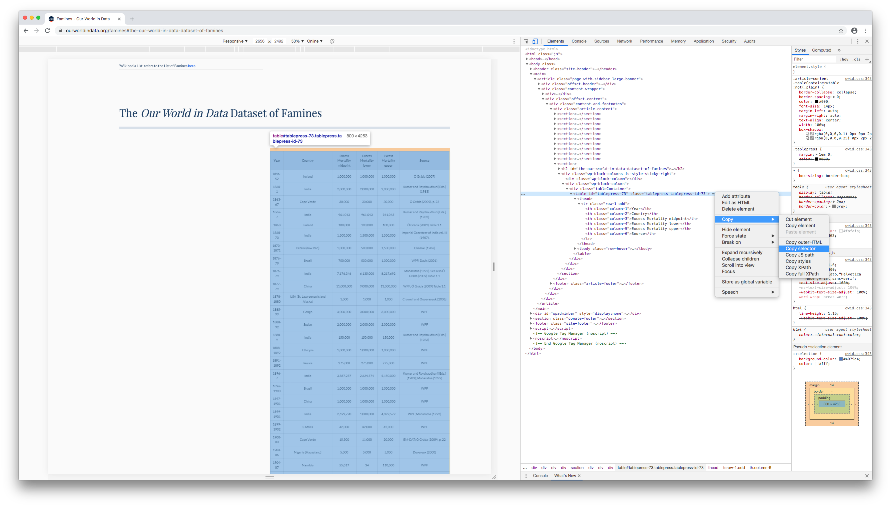

11 rvest
library(tidyverse)
library(rvest)The rvest package (as in “harvest”) allows you to scrape information from a web page and read it into R. In this chapter, we’ll explain the basics of rvest and walk you through an example.
11.1 Web page basics
11.1.1 HTML
HTML (Hyper Text Markup Language) defines the content and structure of a web page. In Chrome, you can view the HTML that generates a given web page by navigating to View > Developer > Developer tools.
A series of elements, like paragraphs, headers, and tables, make up every HTML page. Here’s a very simple web page and the HTML that generates it.

The words surrounded by < > are HTML tags. Tags define where an element starts and ends. Elements, like paragraph (<p>), headings (<h1>), and tables (<table>), start with an opening tag (<tagname>) and end with the corresponding closing tag (</tagname>).
Elements can be nested inside other elements. For example, notice that the <tr> tags, which generate rows of a table, are nested inside the <table> tag, and the <td> tags, which define the cells, are nested inside <tr> tags.
The HTML contains all the information we’d need if we wanted to read the animal data into R, but we’ll need rvest to extract the table and turn it into a data frame.
11.1.2 CSS
CSS (Cascading Style Sheets) defines the appearance of HTML elements. CSS selectors are often used to style particular subsets of elements, but you can also use them to extract elements from a web page.
CSS selectors often reflect the structure of the web page. For example, the CSS selector for the example page’s heading is
body > h1
and the selector for the entire table is
body > table
You don’t need to generate CSS selectors yourself. In the next section, we’ll show you how to use your browser to figure out the correct selector.
11.2 Scrape data with rvest
Our World in Data compiled data on world famines and made it available in a table.

Using this table as an example, we’ll show you how to use rvest to scrape a web page’s HTML, read in a particular element, and then convert HTML to a data frame.
11.2.1 Read HTML
First, copy the url of the web page and store it in a parameter.
url_data <- "https://ourworldindata.org/famines"Next, use rvest::read_html() to read all of the HTML into R.
url_data %>%
read_html()
#> {html_document}
#> <html>
#> [1] <head>\n<meta http-equiv="Content-Type" content="text/html; charset=UTF-8 ...
#> [2] <body class="">\n<header class="site-header"><div class="wrapper site-nav ...read_html() reads in all the HTML for the page. The page contains far more information than we need, so next we’ll extract just the famines data table.
11.2.2 Find the CSS selector
We’ll find the CSS selector of the famines table and then use that selector to extract the data.
In Chrome, right click on a cell near the top of the table, then click Inspect (or Inspect element in Safari or Firefox).

The developer console will open and highlight the HTML element corresponding to the cell you clicked.

Hovering over different HTML elements in the Elements pane will highlight different parts of the web page.

Move your mouse up the HTML document, hovering over different lines until the entire table (and only the table) is highlighted. This will often be a line with a <table> tag.

Right click on the line, then click Copy > Copy selector (Firefox: Copy > CSS selector; Safari: Copy > Selector Path).

Return to RStudio, create a variable for your CSS selector, and paste in the selector you copied.
css_selector <- "#tablepress-73"11.2.3 Extract the table
You already saw how to read HTML into R with rvest::read_html(). Next, use rvest::html_element() to select just the element identified by your CSS selector.
url_data %>%
read_html() %>%
html_element(css = css_selector)
#> {html_node}
#> <table id="tablepress-73" class="tablepress tablepress-id-73">
#> [1] <thead><tr class="row-1 odd">\n<th class="column-1">Year</th>\n<th class= ...
#> [2] <tbody class="row-hover">\n<tr class="row-2 even">\n<td class="column-1"> ...The data is still in HTML. Use rvest::html_table() to turn the output into a tibble.
url_data %>%
read_html() %>%
html_element(css = css_selector) %>%
html_table()
#> # A tibble: 77 × 6
#> Year Country `Excess Mortalit… `Excess Mortali… `Excess Mortali… Source
#> <chr> <chr> <chr> <chr> <chr> <chr>
#> 1 1846–52 Ireland 1,000,000 1,000,000 1,000,000 Ó Grád…
#> 2 1860-1 India 2,000,000 2,000,000 2,000,000 Kumar …
#> 3 1863-67 Cape Verde 30,000 30,000 30,000 Ó Grád…
#> 4 1866-7 India 961,043 961,043 961,043 Kumar …
#> 5 1868 Finland 100,000 100,000 100,000 Ó Grád…
#> 6 1868-70 India 1,500,000 1,500,000 1,500,000 Imperi…
#> # … with 71 more rowsNow, the data is ready for wrangling in R.
Note that html_table() will only work if the HTML element you’ve supplied is a table. If, for example, we wanted to extract a paragraph of text, we’d use html_text() instead.
css_selector_paragraph <-
"body > main > article > div.content-wrapper > div.offset-content > div > div > section:nth-child(1) > div > div:nth-child(1) > p:nth-child(9)"
url_data %>%
read_html() %>%
html_element(css = css_selector_paragraph) %>%
html_text()
#> [1] "The entry is based on a global dataset of famines since the mid-19th century produced by us. This ‘Our World in Data-Dataset of Famines’ can be found at the very end of this document and is preceded by a discussion of how this dataset was constructed and on which sources it is based."